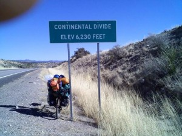

Continental Divide crossing the line
Greetings from Silver City, New Mexico, Thursday 29th 
Since leaving Phoenix and the comfort of Mike and Joan’s, two words will
pretty much sum up my trip: climbing and cold.
I have crossed the
(8200 ft.) before I begin my descent into El Paso, TX.; I will tackle that
one tomorrow. The hills that I’ve climbed on the way to Silver City have
more elevation gain than what I have left because I will begin the day at
6200 ft.. However, the lack of oxygen is noticeable (for a guy who lives
at about 50 ft. above sea level).
I was worried about the weather at this altitude but it looks like I will
have clear skies and a favorable wind for the rest of my trip through the
mountains. The last few mornings I have found solid blocks of ice in my
water bottles. Also, the condensation inside of my tent freezes and when I
bump the walls a minor snow flurry happens. The extreme cold makes it
difficult to get my camp torn down because my hands freeze up in about 30
seconds. But, the sun eventually starts warming things up and melting the
ice that is covering my gear and I do get started, although later than I
would like. Like I seem to be fond of saying: it’s all part of the
adventure. I will be glad to leave the mountains and cold behind!!! Once
out of the mountains I expect to cover lots of miles.
Texas, here I come!